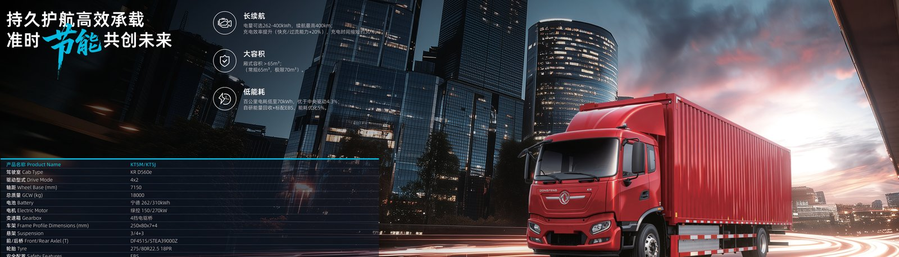

Quick answer: A Dongfeng electric truck with a 282 kWh CATL LFP pack reaches 80 percent charge in about 90 minutes on a 240 kW DC fast charger, while a 600 kWh pack needs 2 to 3 hours. Battery swap cuts that to 5 to 6 minutes. Plan depot charging overnight for lowest cost.
The charging time of an electric truck depends on two variables you control: battery capacity and charger power. Dongfeng EV trucks ship with CATL LFP battery packs sized from 262 kWh to 600 kWh. A smaller 282 kWh pack on a 240 kW charger adds roughly 90 minutes for an 80 percent top-up, while the largest 600 kWh pack needs 2 to 3 hours at the same rate. If your route is short and your depot can charge nightly, charging time rarely becomes a real bottleneck for daily operations.
For overseas fleet buyers, the practical question is not the absolute maximum but the duty cycle. A delivery electric truck that runs 180 km per shift and returns to base each evening can fully recharge during a 7-hour night window on a 120 kW to 240 kW connection. Mining and port trucks that run two or three shifts benefit far more from battery swap than from fast charging, because swap keeps the vehicle moving instead of parked at a plug waiting for electrons.
Dongfeng EV trucks accept DC fast charging up to 240 kW on the standard CCS2 connector used across Europe, the Middle East and most of Asia. At that rate a 282 kWh pack gains about 190 km of range in one charging hour. LvKong drive motors rated between 282 kW and 510 kW draw the pack down efficiently, and the thermal management system holds cell temperature in a safe band so charging speed does not collapse in hot climates such as the UAE electric truck market.
Charging curves are not flat. The first 20 percent and the last 20 percent charge more slowly than the middle band, so fleet planners should size chargers around the 20 to 80 percent window. A 350 kW charger only helps if the pack and onboard rectifier support it; for most Dongfeng models the 240 kW ceiling is the number that matters for total shift time and for the return on a depot charger investment.
Dongfeng offers eight certified CATL LFP pack sizes so buyers can match energy to duty cycle instead of over-paying for range they never use. The table below shows typical charge time to 80 percent on a 240 kW charger and the daily range each pack supports for a standard electric truck.
| Pack size (kWh) | Typical range (km) | Charge to 80% at 240 kW | Best duty cycle |
|---|---|---|---|
| 262 | 200-220 | ~80 min | Urban sweeper, terminal tractor |
| 282 | 210-240 | ~90 min | City cargo, regional delivery |
| 336 | 250-270 | ~110 min | Box truck, light dump |
| 350 | 260-290 | ~115 min | Mixer, municipal |
| 400 | 300-320 | ~130 min | Heavy cargo |
| 422 | 310-330 | ~135 min | Dump, construction |
| 424 | 310-335 | ~136 min | Dump, construction |
| 600 | 330-350 | 2-3 h | Mining, port, 3-shift |
Choosing the right pack is the single biggest lever on charging time. A KT5M electric cargo truck with a 282 kWh pack is ideal for 200 km urban loops where a 90-minute midday charge is invisible to the schedule, while a 600 kWh mining unit trades charge speed for all-day range that only battery swap can refill quickly.
Battery swap stations store fully charged CATL LFP packs and exchange a depleted pack for a fresh one in 5 to 6 minutes, regardless of whether the pack is 262 kWh or 600 kWh. The truck parks over a lift, the pack unlatches, and an automated trolley swaps it. For fleets running continuous shifts, swap delivers uptime closer to a diesel refill than to a plug charge, and it also extends pack life by moving thermal stress off the vehicle.
Swap works best when a fleet standardizes on one pack form factor across its electric truck models. Dongfeng supports shared pack footprints so a depot can run a single swap inventory for cargo, dump and terminal units. This reduces capital tied up in spare packs and simplifies the warranty chain, because the pack stays inside the certified service network rather than being subjected to unpredictable field charging.
Every Dongfeng EV truck ships with an 8-year or 4,500-cycle CATL LFP battery warranty, whichever comes first, covering capacity that falls below 80 percent of rated energy. The warranty is transferable, which supports residual value when a used electric truck is resold. Fast charging and battery swap do not void the coverage, provided charge logs and service records are kept, so operators can use the fastest practical refill without penalty.
The long cycle life matters for total cost of ownership. A 4,500-cycle pack rated for 330 km per charge can deliver more than 1.4 million km of service before the warranty floor, far beyond a typical diesel driveline interval. Fleet buyers should model battery degradation into their seven-year write-down rather than treating the pack as a five-year consumable, because the data shows LFP chemistry holds capacity far better than early NMC packs did.
Depot charging is cheapest when scheduled off-peak. A 282 kWh pack replenished overnight at a commercial rate of about $0.12 per kWh costs roughly $34 for a full fill, versus roughly $120 of diesel for an equivalent day of work in a comparable truck. The list below shows the planning steps most overseas buyers follow before taking delivery of their first electric truck.
Real-world range for a Dongfeng electric truck runs from 200 km on a 262 kWh pack to 350 km on a 600 kWh pack, before load, grade and climate control are applied. Most overseas fleets plan to 80 percent of that figure to preserve charge speed and pack life. A city delivery electric truck typically completes two 90 km loops per charge, while a port terminal unit on swap runs continuously with only the 5 to 6 minute exchange breaking the cycle.
The bottom line for charging time is simple: match the pack to the shift, charge off-peak when you can, and use battery swap for continuous duty. With a 240 kW charger and a 282 kWh pack, an electric truck is road-ready again in about 90 minutes, and with swap the same truck is moving in under 6 minutes. Either way, the operating cost per kilometer stays well below diesel from the first month of service.
A 282 kWh Dongfeng pack reaches 80 percent in about 90 minutes on a 240 kW DC charger, adding roughly 190 km of range per charging hour. The 240 kW ceiling is the practical limit, so a second daily charge keeps a delivery electric truck running without a long midday stop.
A 600 kWh pack cannot beat 2 to 3 hours on a 240 kW plug charger, but battery swap delivers a full 600 kWh pack in 5 to 6 minutes. Mining and port buyers should spec swap instead of fast charging to keep three-shift trucks moving.
Battery swap completes in 5 to 6 minutes for any pack between 262 kWh and 600 kWh, versus 90 minutes to 3 hours for plug charging. Swap stations automate the exchange, so drivers never wait on a charging curve.
Dongfeng EV trucks support DC fast charging up to 240 kW on CCS2 and AC depot charging at 120 kW to 240 kW, with packs from 262 kWh to 600 kWh. A 350 kW unit only helps if the onboard rectifier supports it, so size chargers to the 240 kW ceiling.
The 8-year or 4,500-cycle CATL LFP warranty covers capacity below 80 percent regardless of fast charging, so a 282 kWh pack swapped or fast-charged daily stays protected. Keep charge logs to validate any claim at resale.
Ready to electrify your fleet? Contact Shaanxi Fenghan Trading — authorized Dongfeng EV truck exporter. WhatsApp: +86 153 1943 1311 | Email: sales@fenghan-trade.com | dongfengevtrucks.com
🌐 Our Network: Fenghan Trade (SAGMOTO/SHACMAN Truck Export) · SAGMOTO heavy duty diesel trucks